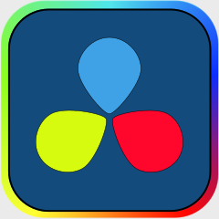

便利ソフトまとめ(2017年版)
Tweetどうも、中3の私です(誰だ)。今回は便利ソフトを紹介したいと思います。以前そういうまとめをしていた先輩がいるので(2017年版)と書いておきました。
GIMP
画像編集ソフト。無料だが、有料ソフトに匹敵するほどの性能を持つ。 レイヤー機能や、透過 TING の直接編集などが標準搭載。
URL: https://www.gimp.org/ (DL 方法が2つあるが、Directly を選ぶとよい。)
VLC media player
動画プレイヤー。とにかく軽い(CPU、メモリへの負荷)上に、ある程度の動画編集も可能という、万能ソフト。
URL: https://www.videolan.org/vlc/index.ja.html
Aviutl

動画編集ソフト。とにかく有能。追加スクリプトの導入でさらに輝く。
URL: http://spring-fragrance.mints.ne.jp/aviutl/
Davinci Resolve

ハリウッド御用達の動画編集ソフト。長らく有料だったが、昨年無料に。様々な機能が標準搭載され、GUIも非常に見やすい。有能。
URL: https://www.blackmagiodesign.com/jp/products/davinciresolvel
Wallpaper engine
デスクトップ背景をMP4形式の動画ファイルに出来る。ただし有料なのと、要求スペックがかなり高いので注意。
URL: http://steamcommunity.com/app/431960/workshop/
Atom
多機能テキストエディタ。C、JAVA などのプログラミング言語に対応。追加パッケージでさらに輝く。
URL: https://atom.io/
Free download manager
ダウンロードが爆速になる。1GBが電話回線で数分。専用のブラウザ拡張機能の導入により、ダウンロードリンクのクリックで自動的にこのソフトで DL を行うことが可能。
URL: http://www.freedownloadmanager.org/
以上、便利ソフトまとめでした。
ライセンス情報
2022年9月追記：WEB版の発行にあたり、著作権の兼ね合いから画像を一部差し替え/削除しました。ライセンス情報を以下に記載します。
- GIMPのロゴマーク・VLC Media Playerのロゴマーク：GPL
This work is free software; you can redistribute it and/or modify it under the terms of the GNU General Public License as published by the Free Software Foundation; either version 2 of the License, or any later version. This work is distributed in the hope that it will be useful, but without any warranty; without even the implied warranty of merchantability or fitness for a particular purpose. See version 2 and version 3 of the GNU General Public License for more details.
- その他：パブリックドメイン(単純な図形及び文字で構成されおり、「思想又は感情を創作的に表現したもの」ではないとされるため)